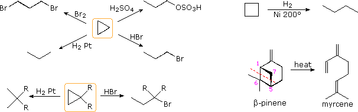
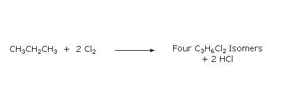

The alkanes and cycloalkanes, with the exception of cyclopropane, are probably the least chemically reactive class of organic compounds. Despite their relative inertness, alkanes undergo several important reactions that are discussed in the following section.
The combustion of carbon compounds, especially hydrocarbons, has been the most important source of heat energy for human civilizations throughout recorded history. The practical importance of this reaction cannot be denied, but the massive and uncontrolled chemical changes that take place in combustion make it difficult to deduce mechanistic paths. Using the combustion of propane as an example, we see from the following equation that every covalent bond in the reactants has been broken and an entirely new set of covalent bonds have formed in the products. No other common reaction involves such a profound and pervasive change, and the mechanism of combustion is so complex that chemists are just beginning to explore and understand some of its elementary features.
Two points concerning this reaction are important:
1. Since all the covalent bonds in the reactant molecules are broken, the quantity of heat evolved in this reaction is related to the strength of these bonds (and, of course, the strength of the bonds formed in the products). Precise heats of combustion measurements can provide useful iinformation about the structure of molecules. 2. The stoichiometry of the reactants is important. If insufficient oxygen is supplied some of the products will consist of carbon monoxide, a highly toxic gas.
From the previous discussion, we might expect isomers to have identical heats of combustion. However, a few simple measurements will disabuse this belief. Thus, the heat of combustion of pentane is –782 kcal/mole, but that of its 2,2-dimethylpropane (neopentane) isomer is –777 kcal/mole. Differences such as this reflect subtle structural variations, including the greater bond energy of 1º-C–H versus 2º-C–H bonds and steric crowding of neighboring groups. In small-ring cyclic compounds ring strain can be a major contributor to thermodynamic stability and chemical reactivity. The following table lists heat of combustion data for some simple cycloalkanes and compares these with the increase per CH2 unit for long chain alkanes.
The chief source of ring strain in smaller rings is angle strain and eclipsing strain. As noted elsewhere, cyclopropane and cyclobutane have large contributions of both strains, with angle strain being especially severe. Changes in chemical reactivity as a consequence of angle strain are dramatic in the case of cyclopropane, and are also evident for cyclobutane. Some examples are shown in the following diagram. The cyclopropane reactions are additions, many of which are initiated by electrophilic attack. The pyrolytic conversion of β-pinene to myrcene probably takes place by an initial rupture of the 1:6 bond, giving an allylic 3º-diradical, followed immediately by breaking of the 5:7 bond.

Halogenation is the replacement of one or more hydrogen atoms in an organic compound by a halogen (fluorine, chlorine, bromine or iodine). Unlike the complex transformations of combustion, the halogenation of an alkane appears to be a simple substitution reaction in which a C-H bond is broken and a new C-X bond is formed. The chlorination of methane, shown below, provides a simple example of this reaction.
CH4 + Cl2 + energy ——> CH3Cl + HCl
Since only two covalent bonds are broken (C-H & Cl-Cl) and two covalent bonds are formed (C-Cl & H-Cl), this reaction seems to be an ideal case for mechanistic investigation and speculation. However, one complication is that all the hydrogen atoms of an alkane may undergo substitution, resulting in a mixture of products, as shown in the following unbalanced equation. The relative amounts of the various products depend on the proportion of the two reactants used. In the case of methane, a large excess of the hydrocarbon favors formation of methyl chloride as the chief product; whereas, an excess of chlorine favors formation of chloroform and carbon tetrachloride.
The following facts must be accomodated by any reasonable mechanism for the halogenation reaction.
1. The reactivity of the halogens decreases in the following order: F2 > Cl2 > Br2 > I2. 2. We shall confine our attention to chlorine and bromine, since fluorine is so explosively reactive it is difficult to control, and iodine is generally unreactive. 3. Chlorinations and brominations are normally exothermic. 4. Energy input in the form of heat or light is necessary to initiate these halogenations. 5. If light is used to initiate halogenation, thousands of molecules react for each photon of light absorbed. 6. Halogenation reactions may be conducted in either the gaseous or liquid phase. 7. In gas phase chlorinations the presence of oxygen (a radical trap) inhibits the reaction. 8. In liquid phase halogenations radical initiators such as peroxides facilitate the reaction.
The most plausible mechanism for halogenation is a chain reaction involving neutral intermediates such as free radicals or atoms. The weakest covalent bond in the reactants is the halogen-halogen bond (Cl-Cl = 58 kcal/mole; Br-Br = 46 kcal/mole) so the initiating step is the homolytic cleavage of this bond by heat or light, note that chlorine and bromine both absorb visible light (they are colored). A chain reaction mechanism for the chlorination of methane has been described. Bromination of alkanes occurs by a similar mechanism, but is slower and more selective because a bromine atom is a less reactive hydrogen abstraction agent than a chlorine atom, as reflected by the higher bond energy of H-Cl than H-Br.
To see an animated model of the bromination free radical chain reaction
When alkanes larger than ethane are halogenated, isomeric products are formed. Thus chlorination of propane gives both 1-chloropropane and 2-chloropropane as mono-chlorinated products. Four constitutionally isomeric dichlorinated products are possible, and five constitutional isomers exist for the trichlorinated propanes. Can you write structural formulas for the four dichlorinated isomers?

The halogenation of propane discloses an interesting feature of these reactions. All the hydrogens in a complex alkane do not exhibit equal reactivity. For example, propane has eight hydrogens, six of them being structurally equivalent primary, and the other two being secondary. If all these hydrogen atoms were equally reactive, halogenation should give a 3:1 ratio of 1-halopropane to 2-halopropane mono-halogenated products, reflecting the primary/secondary numbers. This is not what we observe. Light-induced gas phase chlorination at 25 ºC gives 45% 1-chloropropane and 55% 2-chloropropane.
CH3-CH2-CH3 + Cl2 ——> 45% CH3-CH2-CH2Cl + 55% CH3-CHCl-CH3
The results of bromination ( light-induced at 25 ºC ) are even more suprising, with 2-bromopropane accounting for 97% of the mono-bromo product.
CH3-CH2-CH3 + Br2 ——> 3% CH3-CH2-CH2Br + 97% CH3-CHBr-CH3
These results suggest strongly that 2º-hydrogens are inherently more reactive than 1º-hydrogens, by a factor of about 3:1. Further experiments showed that 3º-hydrogens are even more reactive toward halogen atoms. Thus, light-induced chlorination of 2-methylpropane gave predominantly (65%) 2-chloro-2-methylpropane, the substitution product of the sole 3º-hydrogen, despite the presence of nine 1º-hydrogens in the molecule.
(CH3)3CH + Cl2 ——> 65% (CH3)3CCl + 35% (CH3)2CHCH2Cl
If you are uncertain about the terms primary (1º), secondary (2º) & tertiary (3º) Click Here.
It should be clear from a review of the two steps that make up the free radical chain reaction for halogenation that the first step (hydrogen abstraction) is the product determining step. Once a carbon radical is formed, subsequent bonding to a halogen atom (in the second step) can only occur at the radical site. Consequently, an understanding of the preference for substitution at 2º and 3º-carbon atoms must come from an analysis of this first step.
First Step:
Second Step:
Since the H-X product is common to all possible reactions, differences in reactivity can only be attributed to differences in C-H bond dissociation energies. In our previous discussion of bond energy we assumed average values for all bonds of a given kind, but now we see that this is not strictly true. In the case of carbon-hydrogen bonds, there are significant differences, and the specific dissociation energies (energy required to break a bond homolytically) for various kinds of C-H bonds have been measured. These values are given in the following table.
t-butyl
The difference in C-H bond dissociation energy reported for primary (1º), secondary (2º) and tertiary (3º) sites agrees with the halogenation observations reported above, in that we would expect weaker bonds to be broken more easily than are strong bonds. By this reasoning we would expect benzylic and allylic sites to be exceptionally reactive in free radical halogenation, as experiments have shown. The methyl group of toluene, C6H5CH3, is readily chlorinated or brominated in the presence of free radical initiators (usually peroxides), and ethylbenzene is similarly chlorinated at the benzylic location exclusively. The hydrogens bonded to the aromatic ring (referred to as phenyl hydrogens above) have relatively high bond dissociation energies and are not substituted.
Since carbon-carbon double bonds add chlorine and bromine rapidly in liquid phase solutions, free radical substitution reactions of alkenes by these halogens must be carried out in the gas phase, or by other halogenating reagents. One such reagent is N-bromosuccinimide (NBS), shown in the second equation below. By using NBS as a brominating agent, allylic brominations are readily achieved in the liquid phase.
The covalent bond homolyses that define the bond dissociation energies listed above may are described by the general equation:
Since the hydrogen atom is common to all the cases cited here, we can attribute the differences in bond dissociation energies to differences in the stability of the alkyl radicals (R3C·) as the carbon substitution changes. This leads us to the conclusion that:
The poor stability of phenyl radicals, C6H5·, may in turn be attributed to the different hybridization state of the carbon bearing the unpaired electron (sp2 vs. sp3).
Bond Dissociation Energy and Radical Stability The argument that the stability of alkyl radicals is simply derived from R-H bond dissociation energies is flawed. For a brief explanation of this error, and a reference to a more complete discussion Click Here.
Three problems concerning the identification of structurally equivalent groupings and various alkane reactions are presented here.
This page is the property of The Edvibe Team. Comments, questions and errors should be sent to contact@edvibe.co.ke. These pages are provided to the IOCD to assist in capacity building in chemical education. 05/05/2013